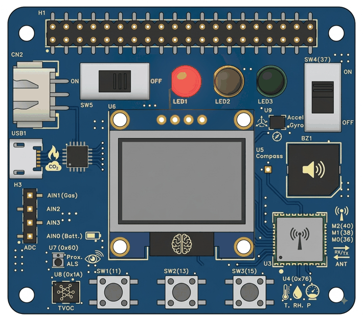

LilEx5 · Pico IoT Module · Activity 2
Your light switched on and stayed on. Now make it switch itself off, and on, and off — for ever.
Make the red LED blink on and off by itself, and never stop.
In Activity 1 you told the Pico to switch a light on. It obeyed — once — and then your program ran out of lines and finished. The light stayed on because nothing ever told it otherwise.
This time you are going to give the Pico four instructions and then tell it to go back to the beginning and do them again. That single idea is what turns a list of instructions into a machine that keeps running.
A loop — telling the Pico to run the same lines over and over.
Indentation: in Python, the gap at the start of a line changes what the line does.
sleep — a pause measured in seconds, and why a blink is impossible without one.
A program that never ends needs a way out. You will need this in every activity from now on.
| Route | What you need | Where you write the code |
|---|---|---|
| A — Wokwi (online) | A web browser only. Nothing to plug in. | wokwi.com |
| B — the real board | LilEx5 board + Pico + USB cable | Thonny, on the computer |
One new idea this time, in three pieces: a loop, a pause, and the spaces that hold them together.
A loop is an instruction that says go back and do that again. Python writes the simplest kind like this:
Code is shown as a picture — turn on JavaScript to see it.Read it out loud as “while true — keep going”. It means: everything underneath this line runs, then it runs again, then again, and it never stops on its own.
Two things about that line catch people out:
True has a capital T. Python does not accept true.: — not a full stop. The colon is
Python's way of saying “and here is what to do”.The Pico is fast. Frighteningly fast — it can run millions of instructions every second. Ask it to switch a light on and off in a loop with nothing in between, and it will do exactly that, far faster than your eye can follow.
So you have to make it wait. That is what sleep does, and the number in
the brackets is how many seconds to wait for. It does not have to be a whole number.
The tool is not built in. Just as you borrowed Pin in Activity 1, you have to borrow
sleep before you can use it:
Same shape as the line you already know: from a toolbox, import a tool. This one
comes out of the toolbox called time instead of machine.
Some programs borrow the whole toolbox instead of one tool out of it, and then say which toolbox every time they use it:
Code is shown as a picture — turn on JavaScript to see it.That does exactly the same thing. Neither is more correct. This module borrows single tools, so every activity looks the same as the last one — but you will meet the other style in code you find online, and now you know it is not something new.
A loop with no pause in it still works. It just runs so fast that the LED is on and off again thousands of times before you can blink your own eyes — so it looks like a dim, permanently-on light rather than a blink.
Below is the loop you are about to build, already running. Change the two waiting times and press Run the loop — then try the presets and watch what happens when the pause gets too short.
This is the part people get wrong. Read it slowly — it is worth more than the rest of the activity put together.
In most languages you would put brackets around the lines that belong to a loop. Python does not. Python looks at how far each line is pushed in from the left, and that is how it decides what belongs to what.
Pushing a line in is called indenting it. The lines that are indented under
while are the ones that repeat. The lines that are not indented are outside the loop
altogether.
while line, press Enter, and both Thonny and
Wokwi push the next line in for you automatically. You mostly have to remember not to undo it
— and to press Backspace when you want to come back out.Nothing crashes. That is what makes this mistake so good at hiding. The program still runs — it just does something you did not ask for.
On the right, the two lines at the left edge are after the loop. The loop never finishes, so the Pico never reaches them — and you are back to Activity 1, with a light that comes on and stays on.
This is the mistake, written out. It has no error in it at all — Python is perfectly happy:
Code is shown as a picture — turn on JavaScript to see it.The light comes on, waits half a second, and then the loop goes back to the top and switches it on again. It is already on, so nothing appears to happen. The last two lines sit there for ever, waiting for a turn that never comes.
If your blink is not blinking, this is the first thing to check.
Push a line in where Python was not expecting it and you get a real error message:
IndentationError: unexpected indent
Unlike the mistake above, this one is easy — the message tells you the line number. Take the spaces off the front of that line.
The opposite message, IndentationError: expected an indented block, means the line
after a colon was not pushed in. A loop with nothing inside it is not allowed.
Same LED, same pin, same wires. If Activity 1 still works, you are already done here.
If your project from Activity 1 is still in your Wokwi account, open it and skip to the code. You are going to replace the program, not the circuit.
If you are starting from an empty project, here it is again in one picture — Activity 1 has the step-by-step version if you want it.
A red LED and a 330 Ω resistor, nothing else. Add them from the blue + button if the project is empty.
Long leg A through the resistor to GP11 (physical pin 15). Short leg C to any GND pin.
Still nothing to wire. The red LED is joined to GP11 inside the board, in copper.
USB cable in, power switch SW5 on.
Bottom-right corner of Thonny,
choose MicroPython (Raspberry Pi Pico), and wait for >>> in the Shell.
Start a new file. Type this in exactly — including the four spaces at the front of the last four lines, which your editor should add for you as soon as you press Enter after the colon.
Code is shown as a picture — turn on JavaScript to see it.# does not have to be at the start of a line. Put one after an instruction and the rest
of that line is a note — handy for labelling four short lines without doubling the length of your
program.The four lines that are new this time. The box turns green when a line is exactly right.
Four boxes, four lines. Capitals matter.
| Code | What it means |
|---|---|
| Code is shown as a picture. | You already know this one from Activity 1: pin 11, set to send power out,
nicknamed led. |
| Code is shown as a picture. | Borrow the sleep tool from the time toolbox. Leave this line out
and the Pico will tell you it has never heard of sleep. |
| Code is shown as a picture. | Do the indented lines below, over and over, for ever. Capital
T, and a colon on the end. |
| Code is shown as a picture. | Send the power — the LED lights. Pushed in, so it is part of the loop. |
| Code is shown as a picture. | Stop and do nothing for half a second. The LED is still on the whole time — nothing has told it to change. |
| Code is shown as a picture. | Cut the power — the LED goes dark. The opposite of on, and the line that
makes this a blink instead of a light. |
Then the fourth waiting line runs, the loop reaches the bottom, and it starts again from the top.
Take that last waiting line out and the Pico switches the LED off and immediately loops round and switches it back on. The dark part of the blink lasts a few millionths of a second, so what you see is a light that is on all the time — very slightly dimmer than usual.
Code is shown as a picture — turn on JavaScript to see it.A blink needs a pause on both sides: one to let you see the light, one to let you see the dark.
| Save | Run | |
|---|---|---|
| Wokwi | Ctrl+S saves the project. | Click the green ▶ Play button above the diagram. |
| Real board | Ctrl+S, choose Raspberry Pi Pico, name it blink.py. | Click the green ▶ Run arrow, or press F5. |
This is new, and you will need it in every activity from now on. Your program has no last line any more — it will keep going until you end it.
| Where | How to stop it |
|---|---|
| Wokwi | Press the red ■ Stop button — it is in the same place the green Play button was. |
| Thonny | Click the red ■ Stop button on the toolbar. Or click into the Shell and press Ctrl+C. |
>>> back, the old program is
still going. Stop it first, then save.One second per blink: on for half of it, off for the other half.
On the real board, the red LED you lit in Activity 1 now switches itself off and on again about once a second, and keeps doing it until you press stop.

| What you see | Try this |
|---|---|
NameError: name 'sleep' is not defined | The line that borrows sleep from the time toolbox is missing or misspelled. |
IndentationError: expected an indented block | Nothing is pushed in under the while line. A loop must have at least one line inside it. |
IndentationError: unexpected indent | A line is pushed in that should not be. The message names the line — take the spaces off the front of it. |
SyntaxError on the while line | Missing colon on the end, or you typed true instead of True. |
| The LED comes on and stays on | The lines that switch it off are not pushed in, so they are outside the loop and never run. |
| The LED looks on all the time, but dimmer | A waiting line is missing, or its number is far too small. It is blinking — too fast to see. |
| It blinks once and stops | The while line is missing, or your four lines are not underneath it. |
| A buzzer is beeping in time with nothing | You used pin 14. Red is 11. |
| I cannot save, or the Shell will not respond (Thonny) | The program is still running. Press the red ■ Stop, or Ctrl+C in the Shell. |
| Nothing happens at all (Wokwi) | Press the green ▶ Play button. Nothing runs until you do. |
| The blink is far slower than you expected | Check the number in the brackets. 5 is five seconds; 0.5 is half of one. |
One LED blinking was the warm-up. Now make three of them take turns.
Task: use all three LEDs to make a working traffic light that runs for ever:
Only one colour is lit at a time, and the yellow is deliberately much shorter than the other two.
You have done most of this before. In the Activity 1 exercise you gave each LED its own nickname, because one nickname can only point at one pin. Do that again, at the top, before the loop:
Those three lines go above the while line, not inside it. You only
need to say which pin is which once.
Switching a colour on is not enough. Nothing switches it off again on its own — you saw that in Activity 1. If you only ever switch things on, you will end up with all three lit and staying lit.
So every colour needs three things, in this order: on, then wait, then off. Three colours, three of those groups.
Here is the first colour done. All of it is pushed in, because all of it repeats:
Code is shown as a picture — turn on JavaScript to see it.Now do the same for green — same shape, different name, same 4 — and then for yellow, with a 1 instead of a 4.
Blank lines between the groups are allowed and make it much easier to read. Python does not mind.
Nine lines inside the loop, in three groups of three. Every one of them is pushed in by four spaces — if any group is left at the left edge, that colour drops out of the sequence and only ever runs once, or not at all.
Finished early? Try these — no answers given.
0 do? Predict first, then try it.Four questions. No marks, no pressure — just check it stuck.
| Loop | Instructions that run over and over instead of once. |
while True | The simplest loop: keep going, for ever. Capital T, colon on the end. |
| Indentation | The spaces at the start of a line. In Python they decide which lines belong to the loop. |
| Block | The group of indented lines that belong together underneath a while. |
| sleep | Wait and do nothing. The number in the brackets is seconds, and it can have a decimal point. |
| Infinite loop | A loop with no way out. Useful on purpose here — you stop it yourself. |
| Stopping a program | The red ■ button, or Ctrl+C in Thonny's Shell. |